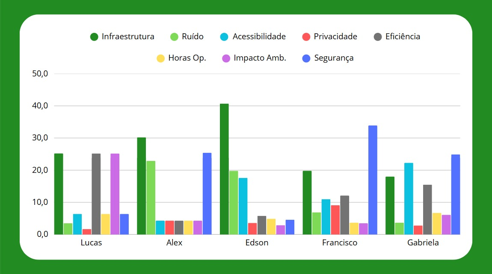
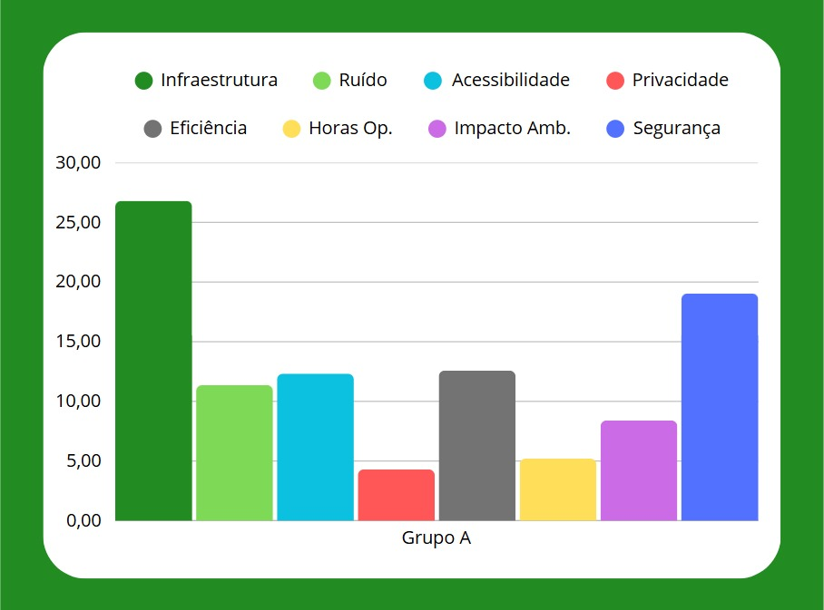

Seleção de Sítio para Vertiporto
Para avaliar a escolha do sítio são usados critérios que consideram diversos fatores relevantes, aplicados no método Processo Hierárquico Analítico (AHP) para hierarquizar as alternativas. A Agregação Individual de Prioridades (AIP) é então utilizada para consolidar as avaliações de diferentes participantes, gerando uma avaliação que represente a vontade do grupo, que posteriormente é aplicada aos sítios disponíveis para definir um sítio que melhor se adeque à proposta.
Critérios para Seleção de Sítio
- Infraestrutura disponível
- Ruído
- Acessibilidade
- Privacidade
- Eficiência
- Horas de operação
- Impacto ambiental
- Segurança
AHP (Processo Hierárquico Analítico) Individual
TEXTO FIGUEIREDO
| Critério/Membro | Lucas | Alex | Edson | Francisco | Gabriela |
|---|---|---|---|---|---|
| Infraestrutura | 25,2% | 30,2% | 40,7% | 19,8% | 18,0% |
| Ruído | 3,5% | 22,9% | 19,8% | 6,9% | 3,7% |
| Acessibilidade | 6,4% | 4,3% | 17,6% | 11,0% | 22,3% |
| Privacidade | 1,7% | 4,3% | 3,6% | 9,1% | 2,8% |
| Eficiência | 25,2% | 4,3% | 5,8% | 12,1% | 15,5% |
| Horas Op. | 6,4% | 4,3% | 4,9% | 3,7% | 6,7% |
| Impacto Amb. | 25,2% | 4,3% | 2,9% | 3,5% | 6,1% |
| Segurança | 6,4% | 25,4% | 4,6% | 33,9% | 24,9% |
| CR | 4,0% | 6,2% | 8,8% | 3,9% | 9,9% |
Figura 1 - Resultados individuais para AHP dos oito critérios para escolha de sítio

(Fonte: Autor.)
Discussão Sobre Opiniões Individuais
- Tendência a valorizar a infraestrutura e segurança
- Tendência a desvalorizar a privacidade e horas de operação
- Tendência de manter a importância do ruído, acessibilidade, impacto ambiental e eficiência como medianos
- Todos as razões de consistência abaixo de 10%
AIP (Agregação Individual de Prioridades)
TEXTO FIGUEIREDO
Figura 2 - Resultados do grupo para AIP dos oito critérios para escolha de sítio

Possíveis Sítios
- Aeroporto Internacional de SJC Professor Urbano Ernesto Stumpf: Integração multimodal e logística
- Bairro Urbanova: Comunidade residencial e acadêmica
- Parque Tecnológico: Foco em negócios e inovação
- Shopping Colinas: Público de alto poder aquisitivo e comércio